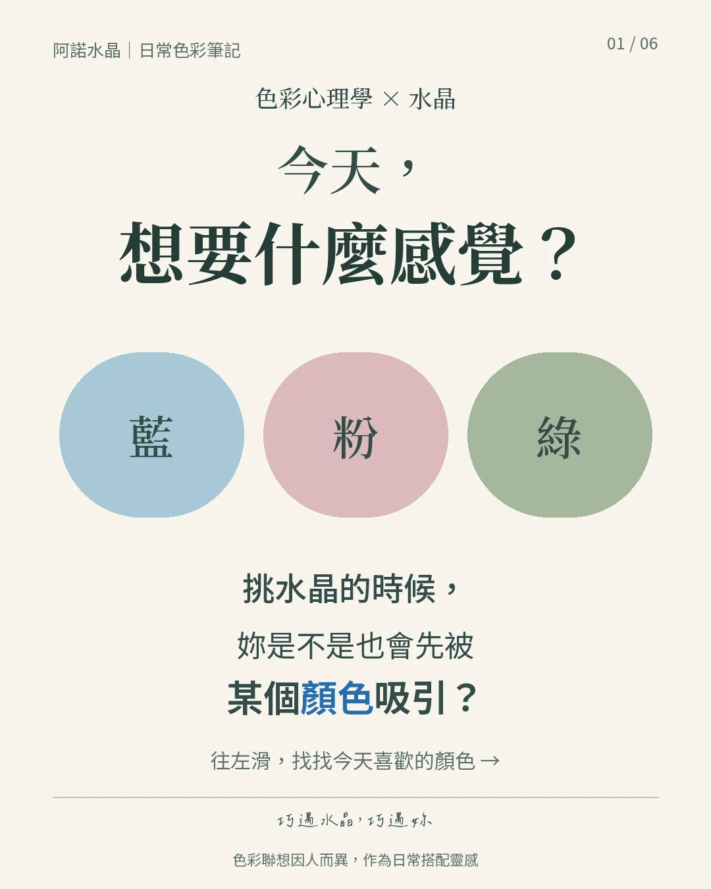
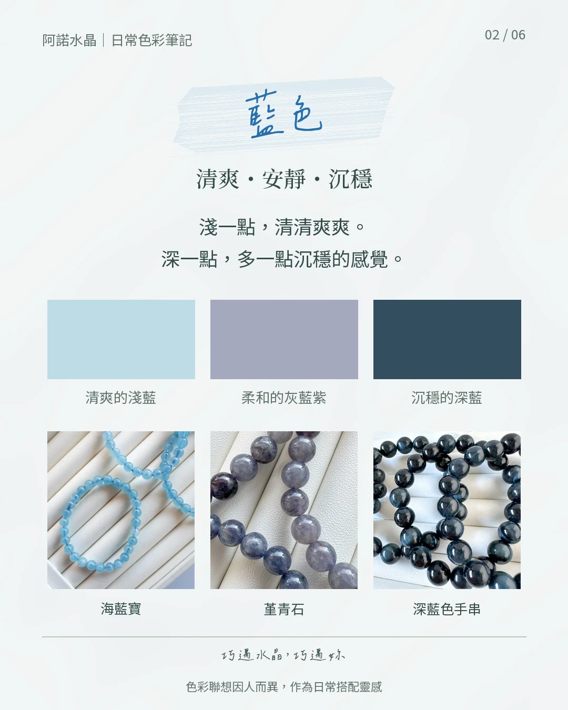
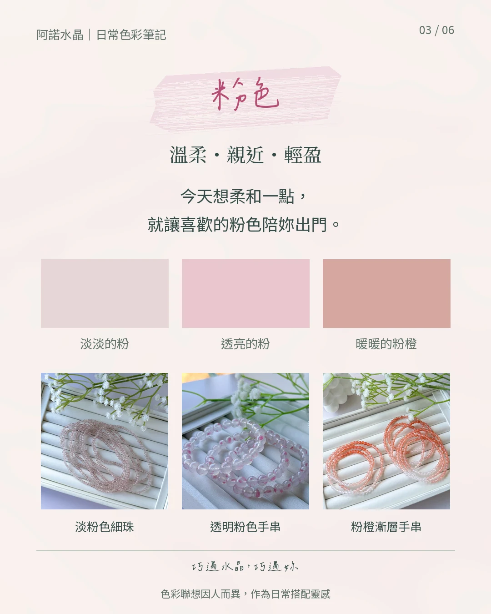
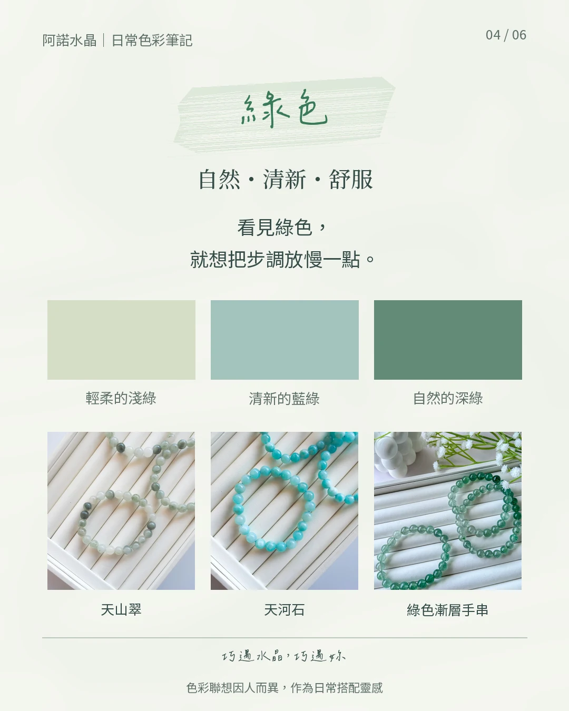
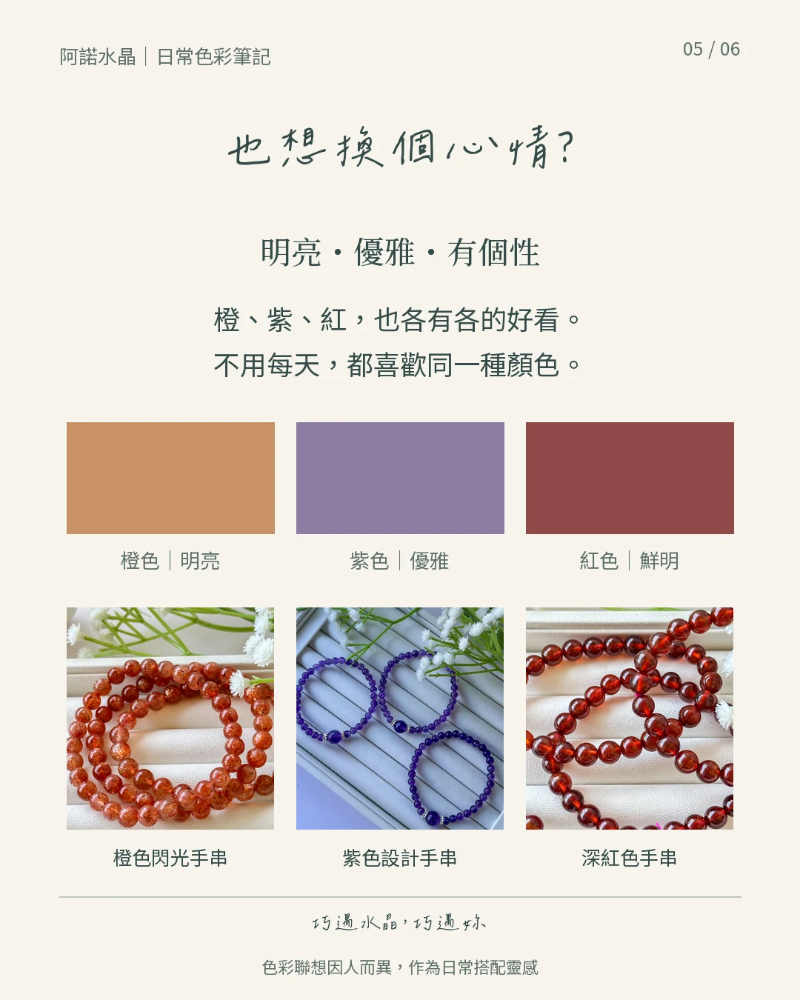
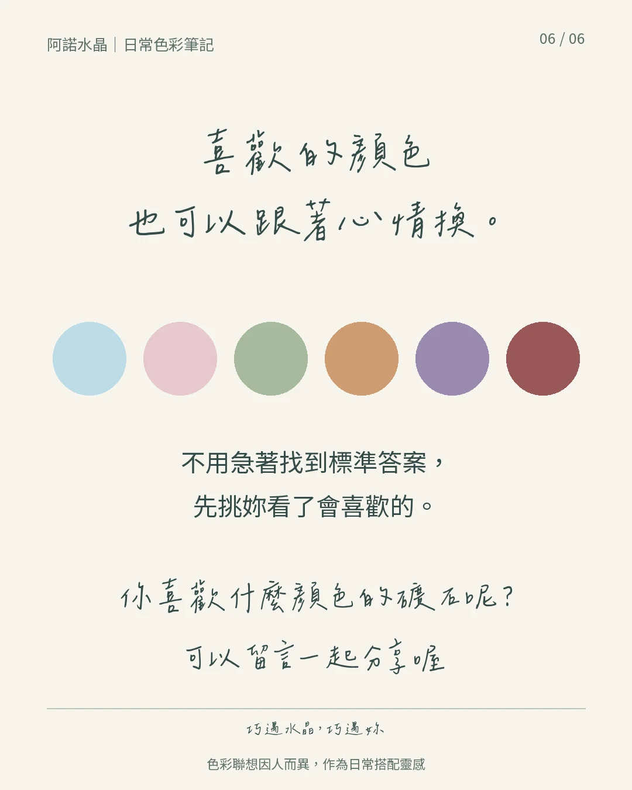

YOUR FIRST CRYSTAL · 第一次挑水晶
今天，想要什麼感覺？
不用先記住每一種礦石的名字，
先從妳看了會喜歡的顏色開始。
可能是清爽的藍、溫柔的粉，也可能是讓妳想慢下來的綠。喜歡的顏色，可以跟著今天的心情換。
先選一個喜歡的顏色 ↓想先了解珠徑與手圍？看新手指南 →
第一次買，可以這樣慢慢挑
- 先選喜歡的顏色看顏色，也想想平常喜歡怎麼穿。
- 再看實拍與尺寸同色系也會有不同深淺、紋理與珠徑。
- 確認手圍與現貨找到喜歡的款式後，阿諾陪妳確認。

01 · 跟著顏色慢慢選
藍色
清爽・安靜・沉穩
淺一點，清清爽爽。深一點，多一點沉穩的感覺。
想找一條日常好搭的手串，可以先看看妳更喜歡清透的淺藍，還是帶一點灰紫、深藍的色調。
圖中實拍作為色系參考；款式、尺寸、價格與現貨，以商品頁及阿諾確認為準。

02 · 跟著顏色慢慢選
粉色
溫柔・親近・輕盈
今天想柔和一點，就讓喜歡的粉色陪妳出門。
不一定要甜甜的粉。淡粉、透亮的粉，或暖一點的粉橙，都有自己的好看。
圖中實拍作為色系參考；款式、尺寸、價格與現貨，以商品頁及阿諾確認為準。

03 · 跟著顏色慢慢選
綠色
自然・清新・舒服
看見綠色，就想把步調放慢一點。
從輕柔的淺綠、清新的藍綠到自然的深綠，先選妳看了覺得舒服的那一種。
圖中實拍作為色系參考；款式、尺寸、價格與現貨，以商品頁及阿諾確認為準。

04 · 還有其他喜歡的顏色
也想換個心情？
明亮・優雅・有個性
橙、紫、紅，也各有各的好看。不用每天，都喜歡同一種顏色。
連結是同色系選物入口，照片不代表每款目前都有現貨。

TAKE YOUR TIME · 慢慢挑就好
先挑妳看了會喜歡的。
從喜歡，到擁有，再到日常配戴時，重新想起那份喜歡。
阿諾不談功效與能量，只談心。這裡的色彩聯想是搭配的靈感，感受會因人而異。
想看更多？展開十二色系筆記

色彩給人的感覺
- 紅色
- 熱情有自信
- 橘色
- 親切好接近
- 黃色
- 明亮有朝氣
- 綠色
- 自然又安心
- 藍色
- 冷靜且可靠
- 粉色
- 溫柔有親和力
- 紫色
- 優雅有個性
- 棕色
- 溫暖又踏實
- 黑色
- 俐落有分寸
- 白色
- 乾淨而清爽
- 灰色
- 低調有質感
- 金色
- 精緻有亮點
這些是搭配時可以參考的色彩聯想，感受會隨明度、彩度、文化與個人經驗而不同，並非水晶功效。